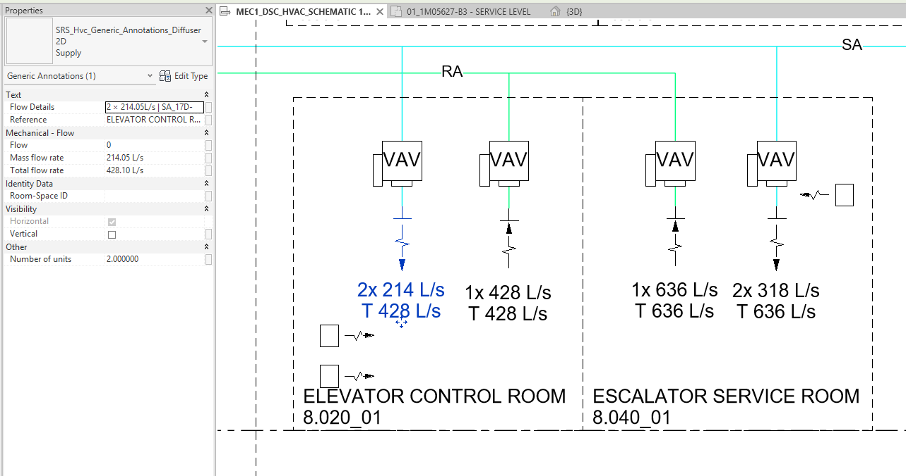

HVAC Schematic Data Synchronization (Sync Air Flow)
Table of contents
This command provides comprehensive data synchronization between the 3D model and 2D schematics, updating room names, air flow rates, and creating equipment annotations.
1. What the Command Does
- Updates Room Names: Synchronizes the name in the 2D room annotation (
SRS_Generic_Annotations_Schematic_Room) with the name of the correspondingMEP Spacein 3D. - Synchronizes Air Flow:
- Determines which room on the schematic each 2D diffuser annotation is in and writes an identifier in the format
RoomName-RoomNumberto its Reference parameter. - Using this Reference, it sums the air flow from the corresponding 3D terminals and updates the parameters in the 2D annotation.
- Determines which room on the schematic each 2D diffuser annotation is in and writes an identifier in the format
- Synchronizes Unit Heater Annotations (New Feature): Automatically creates missing 2D annotations for 3D unit heaters or reports excess ones, based on their quantity in each room.
2. Preparation
For correct operation, ensure that:
MEP Spacesare created and configured in the 3D model.- 2D room annotations SRS_Generic_Annotations_Schematic_Room are placed on the schematic sheets.
- 2D diffuser annotations SRS_Hvc_Generic_Annotations_Diffuser 2D are placed on the schematic sheets. For Return Air systems, the expected 2D annotation type is ‘Exhaust’, and for Supply Air systems, it’s ‘Supply’.
- For unit heater annotation synchronization, the following must be loaded into the project:
- 3D Equipment:
SRS_Hvc_Mechanical_Equipment_Wall_Unit_Heater_AHX: MODEL_15TO20KWSRS_Hvc_Mechanical_Equipment_Ceiling_Unit_Heater: OACP1500SRS_Hvc_Mechanical_Equipment_Wall_Unit_Heater: OAS02038AM
- 2D Annotation:
SRS_Hvc_Generic_Annotations_Unit_Heater_Elec_Sch
- 3D Equipment:
- Note: The command automatically runs
Assign Spaces To Equipmentas a preliminary step in a separate transaction. The result of this step is displayed in the report as Step 0.
3. Usage
- Go to the SNR tab on the Revit ribbon.
- Click the Sync Air Flow icon.
- The command will perform all checks and synchronization automatically.
- At the end, a dialog box will appear with a report of the work done.
4. Results
- The Room Name parameter in the room annotations will be updated.
- The following parameters in the diffuser annotations (
SRS_Hvc_Generic_Annotations_Diffuser 2D) will be updated:- Total flow rate: The total air flow from all matched 3D terminals.
- Number of units: The total number of matched 3D terminals.
- Mass flow rate: The average air flow (total flow / number of units).
- Flow Details: A text string with calculation details (e.g.,
2 × 150L/s + 1 × NoParam).
- Missing 2D annotations for unit heaters will be created. New annotations are placed in a column, starting from the bottom-left corner of the room on the schematic.

5. Interactive Report
The command provides a detailed report of the actions performed.
- Short Report: The main window displays a summarized version. Long lists of errors (more than 10-20) are automatically truncated for readability.
- Full Report: To view the complete list of all messages and IDs, click the Abrir informe completo button. This will create a text file with the full report and open it in your default editor.
6. Limitations and Logic
- Excess Annotations: The command does not delete “excess” unit heater annotations. Instead, it reports them.
- System Matching Logic (for Air Flow):
- The System Class (
Supply AirorReturn Air) is determined by the type name of the 2D diffuser annotation (SupplyorExhaust). - The command first matches 2D annotations with 3D terminals by an exact match of the room and the calculated system class.
- If multiple systems of the same class are found in one room, a more complex logic is engaged:
- The name of the view where the 2D annotation is placed is searched for as a substring of the duct system name in 3D.
- Example: A 2D annotation on the view
HVAC Plan SA-1will be matched with the systemSA-1-Office.
- Example: A 2D annotation on the view
- If matching by view name fails, the command will perform an arbitrary match and report it.
- The System Class (
7. Configuration via JSON
Some of the command’s operational parameters, such as family and parameter names, can be configured through the central BIM Tools configuration file. This allows you to adapt the command to your project’s standards without changing the code.
The settings file is located at:
%AppData%\Sener\BimTools\Settings.json
How to open this path?
%AppData%is a standard Windows shortcut for accessing a hidden folder with application settings.
- Copy the entire path (including
%AppData%, but without the file name:%AppData%\Sener\BimTools).- Open Windows Explorer (any folder, e.g., “My Computer”).
- Click on the address bar, paste the copied path, and press Enter. The folder containing the
Settings.jsonfile will open directly.
For this command, find the SyncAirFlowSettings section in the file, change the desired values, and save the file. A Revit restart is not necessary; just run the command again.